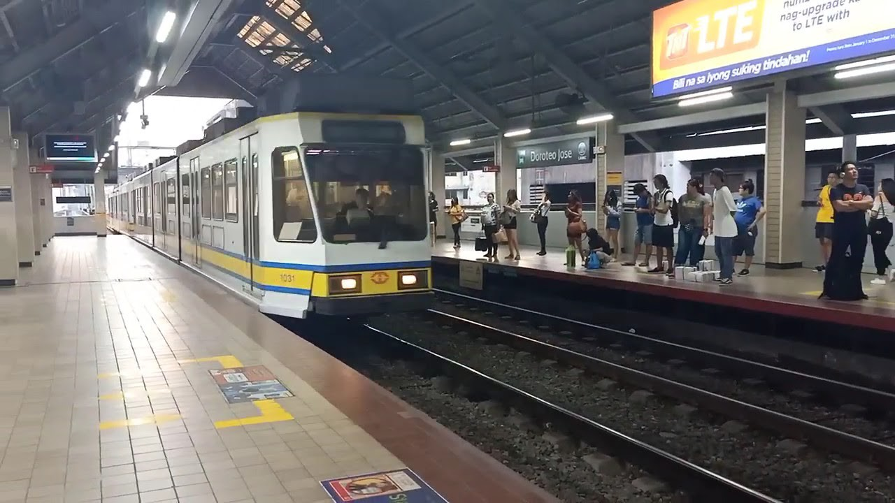
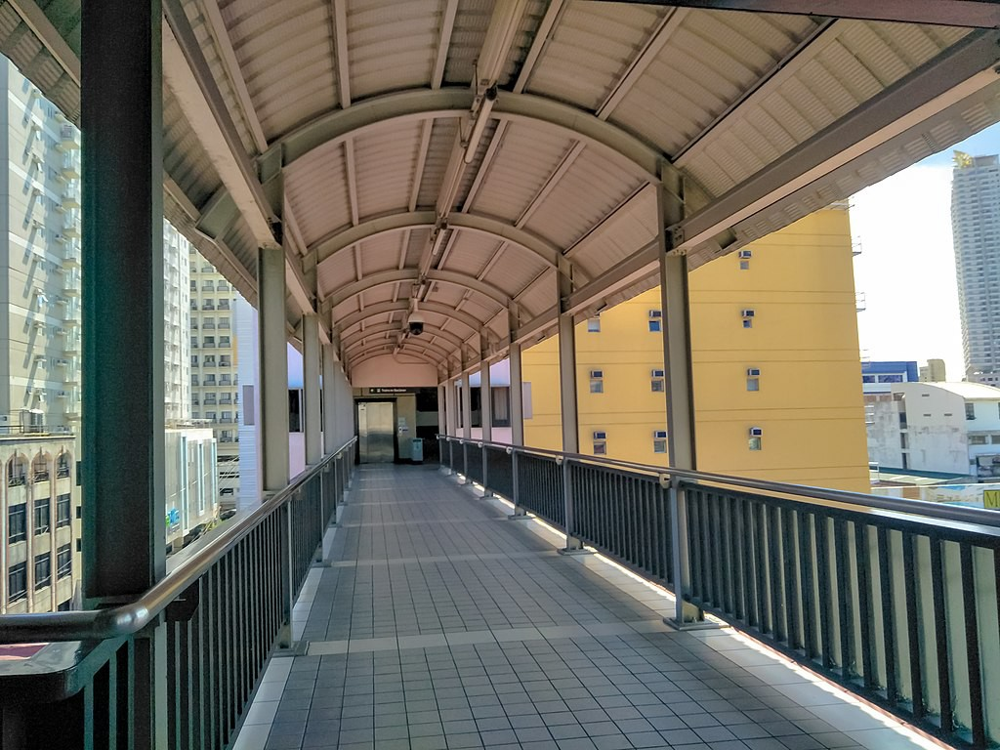

Doroteo Jose
LRT-1 station
Doroteo Jose station is an elevated Manila Light Rail Transit (LRT) station situated on Line 1. The station is located in Santa Cruz in Manila, on Rizal Avenue and slightly past Doroteo Jose Street. Both the station and the street are named after Doroteo Jose, a Filipino who was arrested by Spanish authorities in 1898 for leading a movement against a corrupt archbishop.
Doroteo Jose station is the second station of Line 1 north of the Pasig River, after Carriedo station. It is the tenth station for trains headed to Baclaran and the eleventh station for trains headed to Fernando Poe Jr.
The station is near the Manila City Jail and the Fabella Memorial Hospital. Popular shopping centers such as the Isetann Cinerama Recto and the Quiapo Bargain Center are also nearby. Due to its position of being near the University Belt, the station is also close to educational institutions of the University Belt. It is one of the only stations on the line where commuters can transfer from one platform to another without having to go down to the street level, however unlike Central Terminal, Fernando Poe Jr., Carriedo, and Balintawak stations, commuters still have to exit the fare gates to access the walkway above the platforms.
The station's renovation program began in December 2016. The renovation improved and equipped the station with structural upgrades and new modern facilities. It was reopened in a ceremony on February 6, 2017.
| Doroteo Jose | |||||||
|---|---|---|---|---|---|---|---|
|  | |||||||
| General information | |||||||
| Location | Rizal Avenue, Santa Cruz, Manila, Metro Manila, Philippines | ||||||
| Owned by | Department of Transportation Light Rail Transit Authority |
||||||
| Operated by | Light Rail Manila Corporation | ||||||
| Line(s) | Line 1 | ||||||
| Platforms | 2 (2 side) | ||||||
| Tracks | 2 | ||||||
| Connections |
LRT-2 Recto
Future: MRT-8 Lerma |
||||||
| Construction | |||||||
| Structure type | Elevated | ||||||
| Parking | Yes (Manila Grand Opera Hotel & Casino, Amaia Skies Avenida) | ||||||
| Accessible | Yes | ||||||
| Other information | |||||||
| Station code | DJ | ||||||
| History | |||||||
| Opened | May 12, 1985 | ||||||
| Services | |||||||
|
|||||||
| Out-of-system interchange | |||||||
|
|||||||
Doroteo Jose station is the second station of Line 1 north of the Pasig River, after Carriedo station. It is the tenth station for trains headed to Baclaran and the eleventh station for trains headed to Fernando Poe Jr.
The station is near the Manila City Jail and the Fabella Memorial Hospital. Popular shopping centers such as the Isetann Cinerama Recto and the Quiapo Bargain Center are also nearby. Due to its position of being near the University Belt, the station is also close to educational institutions of the University Belt. It is one of the only stations on the line where commuters can transfer from one platform to another without having to go down to the street level, however unlike Central Terminal, Fernando Poe Jr., Carriedo, and Balintawak stations, commuters still have to exit the fare gates to access the walkway above the platforms.
The station's renovation program began in December 2016. The renovation improved and equipped the station with structural upgrades and new modern facilities. It was reopened in a ceremony on February 6, 2017.
Doroteo Jose station serves as the transfer point between Lines 1 and 2. The station is connected to Recto station by means of an elevated walkway.
The station, being near the University Belt of Manila, serves as an important transfer point for buses, taxis, and cycle rickshaws, although this role is also being given to the closer Recto station. Buses stop at the bus terminal on Recto Avenue.
Many provincial bus lines, such as Bataan Transit (Bataan, Pampanga, Pangasinan, and other Northern Luzon provinces), Genesis Transport Service Inc. (Bataan, Pampanga, and Baguio), Solid North Transit Inc. (Pangasinan and Tarlac), and Philippine Rabbit (Tarlac and Baguio) provide bus terminals near the station and serve the northern corridors.

Overpass between platforms at Level 3
| Existing stations | |
|---|---|
|
Baclaran
EDSA Libertad Gil Puyat Vito Cruz Quirino Pedro Gil United Nations Central Carriedo |
Doroteo Jose
Bambang Tayuman Blumentritt Abad Santos R. Papa 5th Avenue Monumento Balintawak Fernando Poe Jr. |
| Under construction | |
|
Redemptorist
MIA Asia World Ninoy Aquino |
Dr. Santos
Las Piñas Zapote Niog |
| North Triangle | |